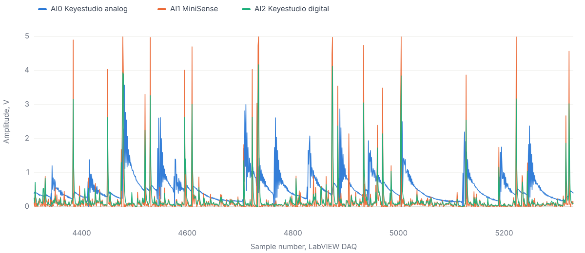
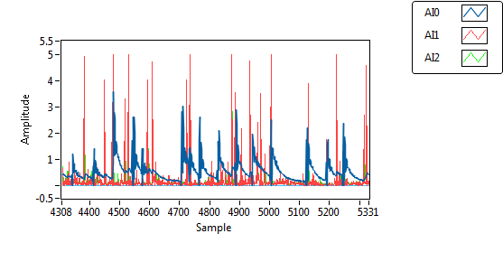

Reading the recorded response

2Sensors compared
3Recorded channels
1,022Samples in the saved run
My part in the project
I helped assemble the setup with the team and contributed the discussion and analysis. I compared how the two sensors responded to vibration and discussed the differences in sensitivity. The side by side traces make the response of each sensor easier to examine than a single peak value.
The Keyestudio sensor provided analog and digital outputs. The MiniSense provided the other sensor response. The signals here are recorded voltages, so the comparison is about the observed sensor output.
The original LabVIEW record
